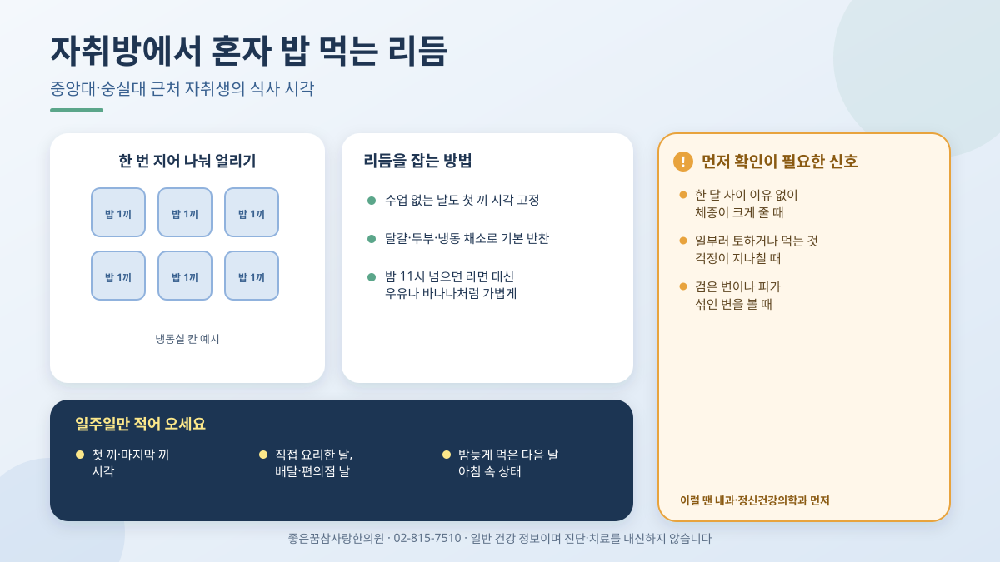

자취하며 혼자 밥을 해 먹을 때는 수업이 없는 날에도 첫 끼 시각을 정해 두고, 밥을 한 번에 지어 나눠 얼리며 밤 11시 이후에는 가벼운 것으로 바꾸는 것부터 식사 리듬을 잡아 보시기를 권합니다.
여쭙는 것
- 하루 첫 끼는 보통 몇 시에 드시나요?
- 일주일에 직접 요리하는 날과 배달·편의점으로 먹는 날은 각각 며칠 정도인가요?
- 밤늦게 먹은 다음 날 아침 속은 어떤가요?
생활에서 해 볼 것
- 수업이 없는 날에도 첫 끼 시각을 일정하게 정해 두기
- 밥을 한 번에 지어 한 끼 양씩 나눠 얼려 두기
- 달걀, 두부, 냉동 채소처럼 오래 두고 쓰기 쉬운 재료로 기본 반찬 만들기
한의원에서 함께 살필 것
- 끼니가 불규칙해진 뒤 체중이 크게 늘거나 줄어든 경우 식사 리듬과 잠을 함께 살핍니다.
- 속쓰림이나 더부룩함이 자주 반복되는 경우 식사 시각과 소화 상태를 함께 살핍니다.
- 입맛이 없어 하루 한 끼만 먹는 날이 많은 경우 기분과 생활 리듬을 함께 여쭙니다.
먼저 확인이 필요한 신호
- 한 달 사이 이유 없이 체중이 크게 줄어든 경우
- 먹은 것을 일부러 토하거나 먹는 것에 대한 걱정이 지나치게 큰 경우
- 검은 변이나 피가 섞인 변을 본 경우

첫 끼 시각을 일정하게 정해 두는 것이 혼자 사는 대학생의 식사 리듬을 잡는 가장 쉬운 시작입니다. 흑석동이나 상도동에서 처음 자취를 시작한 대학생분들 가운데 첫 끼가 오후 3시, 저녁은 밤 11시 라면이라고 말씀하시는 분이 있고, 수업과 아르바이트 시간이 날마다 달라 식사 시각도 매일 바뀌면 몸무게와 소화, 잠까지 함께 흔들리기도 합니다. 이유 없이 체중이 크게 줄거나 먹는 것에 대한 걱정이 지나치다면 먼저 확인이 필요합니다.
왜 이런 불편이 생길 수 있나요
- 일정이 매일 달라지면 배고플 때까지 미루다 한 번에 몰아 먹게 되기 쉽습니다.
- 요리가 번거로우면 라면이나 배달 음식에 기대게 되어 짜고 기름진 식사가 늘 수 있습니다.
- 늦은 밤 식사는 잠을 얕게 하고 다음 날 아침 입맛을 떨어뜨려 첫 끼가 더 늦어지는 흐름을 만듭니다.
- 처음 혼자 사는 시기에는 장보기와 식사 계획이 익숙하지 않아 끼니를 거르는 날이 많아지기도 합니다.

먼저 이렇게 여쭙니다
- 하루 첫 끼는 보통 몇 시에 드시나요?
- 일주일에 직접 요리하는 날과 배달·편의점으로 먹는 날은 각각 며칠 정도인가요?
- 밤늦게 먹은 다음 날 아침 속은 어떤가요?
- 최근 몸무게가 늘거나 줄었다고 느끼시나요?
일상에서 먼저 해 볼 수 있는 것
- 수업이 없는 날에도 첫 끼 시각을 일정하게 정해 두기
- 밥을 한 번에 지어 한 끼 양씩 나눠 얼려 두기
- 달걀, 두부, 냉동 채소처럼 오래 두고 쓰기 쉬운 재료로 기본 반찬 만들기
- 밤 11시 이후에는 라면 대신 우유나 바나나처럼 가벼운 것으로 바꾸기

한의원에서 함께 살필 수 있는 경우
- 끼니가 불규칙해진 뒤 체중이 크게 늘거나 줄어든 경우 식사 리듬과 잠을 함께 살핍니다.
- 속쓰림이나 더부룩함이 자주 반복되는 경우 식사 시각과 소화 상태를 함께 살핍니다.
- 입맛이 없어 하루 한 끼만 먹는 날이 많은 경우 기분과 생활 리듬을 함께 여쭙니다.
좋은꿈참사랑한의원에서는 체중 숫자보다 먹는 시각과 잠, 활동량을 먼저 살피고, 필요하다고 판단될 때 인바디 체성분 검사로 몸의 구성을 함께 봅니다. 생활에서 바꿀 순서를 정하고 침·한약 상담 등이 필요한지 함께 이야기하며, 혈압·혈당 같은 수치는 내과 진료와 함께 확인합니다.
이렇게 기록해 오시면 상담이 쉬워집니다
- 일주일 동안의 첫 끼와 마지막 끼 시각
- 직접 요리한 날과 배달·편의점으로 먹은 날
- 밤늦게 먹은 다음 날 아침의 속 상태
- 최근 체중 변화(대략)

이런 증상은 먼저 확인이 필요합니다
- 한 달 사이 이유 없이 체중이 크게 줄어든 경우
- 먹은 것을 일부러 토하거나 먹는 것에 대한 걱정이 지나치게 큰 경우
- 검은 변이나 피가 섞인 변을 본 경우
혈압·혈당·콜레스테롤 약을 드시고 있다면 처방한 의사와 상의 없이 줄이거나 끊지 않습니다. 검사 수치에 대한 진단과 약 처방은 내과 진료가 필요할 수 있습니다. 가슴 통증이나 숨참, 식은땀이 함께 오면 바로 119를 부르세요.
한눈에 보는 표
| 구분 | 핵심 |
|---|---|
| 여쭙는 것 | 하루 첫 끼는 보통 몇 시에 드시나요? 일주일에 직접 요리하는 날과 배달·편의점으로 먹는 날은 각각 며칠 정도인가요? |
| 생활에서 해 볼 것 | 수업이 없는 날에도 첫 끼 시각을 일정하게 정해 두기 밥을 한 번에 지어 한 끼 양씩 나눠 얼려 두기 |
| 한의원에서 함께 살필 것 | 끼니가 불규칙해진 뒤 체중이 크게 늘거나 줄어든 경우 식사 리듬과 잠을 함께 살핍니다. 속쓰림이나 더부룩함이 자주 반복되는 경우 식사 시각과 소화 상태를 함께 살핍니다. |
| 먼저 확인이 필요한 신호 | 한 달 사이 이유 없이 체중이 크게 줄어든 경우 먹은 것을 일부러 토하거나 먹는 것에 대한 걱정이 지나치게 큰 경우 |
자주 묻는 질문
자취하면 살이 찌는 게 당연한가요?
사람마다 다릅니다. 늦은 시각에 몰아 먹는 습관과 잠 부족이 겹치면 체중이 늘기 쉬워, 먹는 양보다 먹는 시각부터 함께 살펴봅니다.
한 끼라도 제대로 먹으면 되지 않나요?
하루 한 끼로 몰아 먹으면 그 한 끼에 과식하기 쉽습니다. 양을 나누어 하루 두세 번으로 드시는 것을 권합니다.
자취방에서 쉽게 챙길 수 있는 아침이 있나요?
얼려 둔 밥을 데워 달걀과 김을 곁들이거나 바나나와 우유처럼 바로 먹을 수 있는 것으로 시작해 보세요. 무엇을 먹느냐보다 매일 비슷한 시각에 먹는 것이 먼저입니다.
진료 시간은 어떻게 되나요?
좋은꿈참사랑한의원은 평일 09:30~20:00(점심 13:00~14:00), 토·일·공휴일 09:30~15:00에 진료합니다.
이 글은 일반적인 건강 정보이며 개인의 진단이나 치료를 대신하지 않습니다. 증상이 있거나 복용 중인 약이 있다면 진료를 통해 확인하세요. 치료 효과는 개인마다 다를 수 있습니다.
작성 기준: 일반적으로 알려져 있는 건강 정보를 참고해 정리했습니다(대표원장 감수). 증상 기록은 1~2주 동안 하루 1회, 비슷한 시간에 적어 오시면 지난 상태와 비교하기 쉽습니다.
좋은꿈참사랑한의원은 재진 때 지난번 이야기부터 이어서 여쭙니다. 진료시간과 예약은 오시는 길에서 확인하세요.